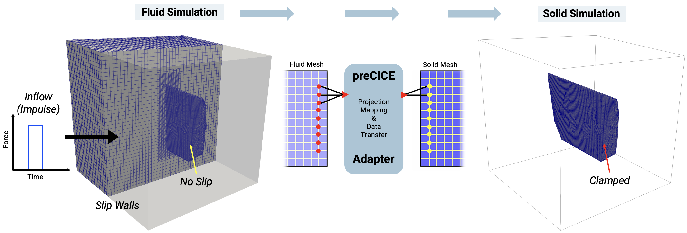
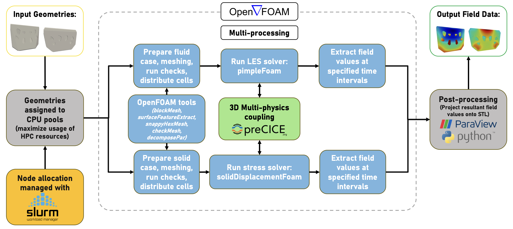
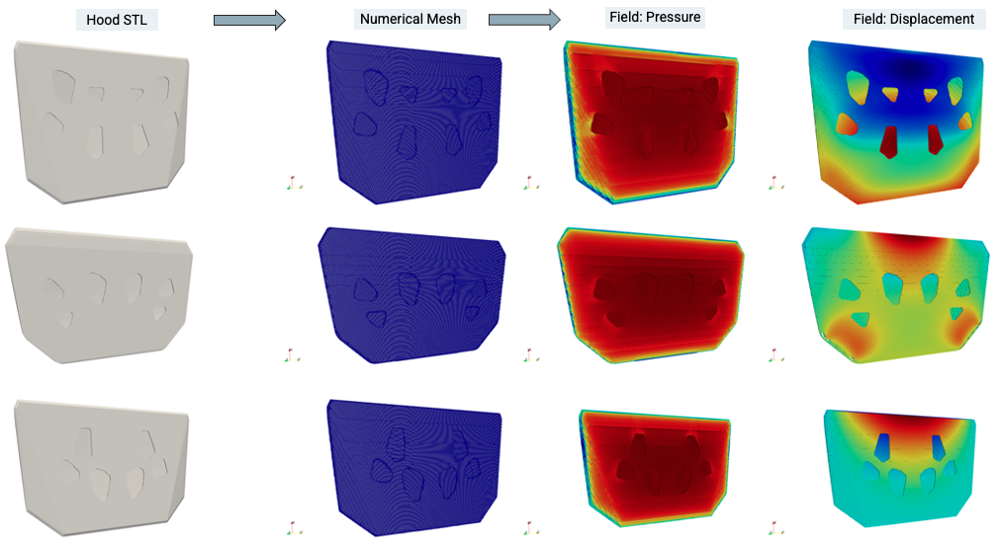
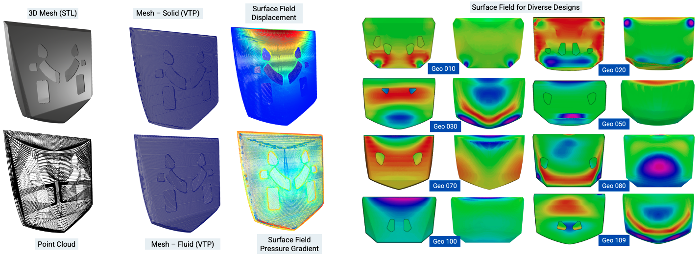

multiphysics · CFD · HPC
Automotive hood FSI simulation pipeline
Simulations & Computation Lead · University of Michigan / Ford Motor Company
Overview
Built a coupled fluid–structure interaction pipeline to model fluid-induced mechanical defects across 16,000+ representative automotive hood geometry variants for Ford Motor Company. The pipeline generates large-scale simulation datasets for downstream machine learning models that predict surface defect likelihood directly from manufacturing geometry. Co-authored paper accepted to NeurIPS 2025.
Approach & methodology
Custom solver modifications to OpenFOAM's pimpleFoam (fluid) and solidDisplacementFoam (structural) enabled bidirectional field coupling via preCICE middleware. Projection mapping was implemented for data transfer between non-conforming fluid and structural meshes at the shared interface boundary.
The complete STL-to-displacement-field pipeline was automated on HPC infrastructure via SLURM job scripts. Mesh cell count and time-domain parameters were optimized to reduce total CPU runtime while preserving solution accuracy. Python post-processing scripts parsed solver output into data suitable for ML training ingestion.
Tools & techniques
OpenFOAM (pimpleFoam, solidDisplacementFoam), preCICE coupling library, SLURM workload manager, Python, STL geometry processing, HPC cluster environment, projection mapping for field transfer across non-conforming meshes.
Outcomes & results
Delivered a fully automated pipeline capable of processing 16,000+ hood geometry variants end-to-end without manual intervention. Cell count and time-domain optimizations reduced total CPU runtime significantly per variant. Simulation outputs were packaged as structured ML-ready training data. Work contributed to a paper accepted at NeurIPS 2025.
Images



